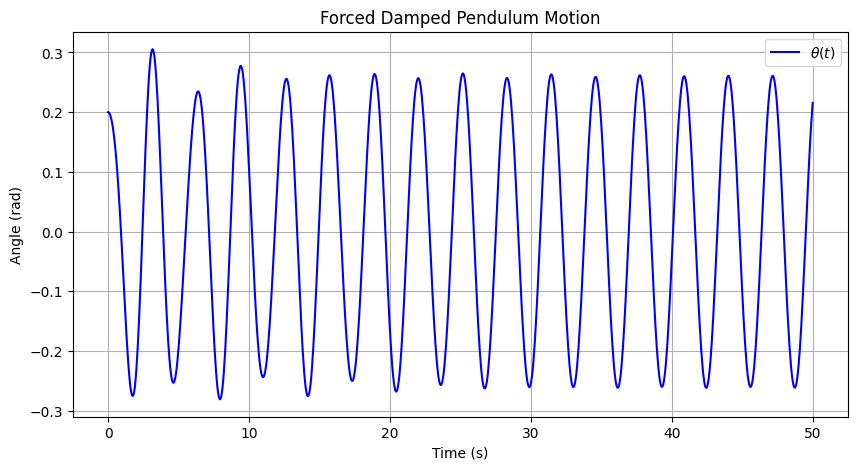
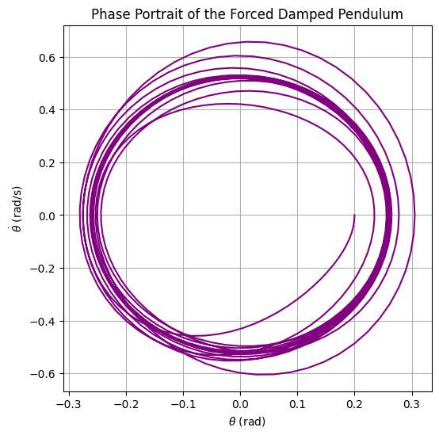

Problem 2
📌 Investigating the Dynamics of a Forced Damped Pendulum
🏗 Motivation
The forced damped pendulum is a fascinating system that exhibits a range of behaviors, from simple oscillations to chaotic motion. By introducing damping and an external periodic force, we observe a transition from regular periodic motion to resonance, quasiperiodicity, and chaos.
This system is crucial for understanding:
- Resonance in mechanical systems (e.g., bridges, buildings under periodic stress).
- Nonlinear dynamics and chaos theory (e.g., weather patterns, heart rhythms).
- Energy harvesting from oscillations.
⚖ 1. Theoretical Foundation
📜 Equation of Motion
The forced damped pendulum follows the nonlinear differential equation:
where:
- \( \theta \) = angular displacement
- \( \gamma \) = damping coefficient
- \( \omega_0 \) = natural frequency of the pendulum (\( \omega_0 = \sqrt{\frac{g}{L}} \))
- \( A \) = amplitude of the external driving force
- \( \omega \) = driving frequency
For small angles (\( \theta \approx \sin\theta \)), the equation simplifies to:
which resembles the equation of a driven damped harmonic oscillator.
📌 Resonance Condition
Resonance occurs when the driving frequency \( \omega \) matches the natural frequency \( \omega_0 \), leading to maximum energy absorption and large oscillations:
At resonance, even small driving forces can produce large oscillations, which is crucial in mechanical engineering and structural safety.
📊 2. Analysis of Dynamics
🔹 Effect of Damping (\( \gamma \))
- Low damping: The pendulum exhibits large oscillations and resonance.
- High damping: The system stabilizes quickly with reduced oscillations.
🔹 Effect of Driving Amplitude (\( A \))
- Low amplitude: The pendulum undergoes periodic motion.
- High amplitude: The system transitions into chaotic motion for certain frequencies.
🔹 Effect of Driving Frequency (\( \omega \))
- When \( \omega \approx \omega_0 \), resonance occurs.
- When \( \omega \) is far from \( \omega_0 \), the response is weak.
- Nonlinear behavior emerges at certain parameter values, leading to chaos.
🌍 3. Practical Applications
- Engineering & Structural Dynamics
- Bridges & Skyscrapers: Understanding how periodic forces (e.g., wind, earthquakes) affect large structures.
-
Vibration Isolation: Designing materials that minimize resonance effects.
-
Energy Harvesting
- Pendulum-based generators: Extracting energy from periodic motion.
-
Ocean wave energy devices.
-
Chaos Theory & Climate Models
- Weather prediction models involve nonlinear oscillatory behaviors similar to the forced pendulum.
💻 4. Implementation (Python Simulation)
Below is a Python script that simulates the motion of a forced damped pendulum using numerical integration (Runge-Kutta method).
📌 Step 1: Install Required Libraries
Before running the code, install NumPy and Matplotlib if needed:
pip install numpy matplotlib scipy
📌 Step 2: Python Code for Simulation
import numpy as np
import matplotlib.pyplot as plt
from scipy.integrate import solve_ivp
# Define system parameters
g = 9.81 # Gravity (m/s²)
L = 1.0 # Length of pendulum (m)
gamma = 0.2 # Damping coefficient
A = 1.5 # Driving amplitude
omega = 2.0 # Driving frequency
# Define natural frequency
omega_0 = np.sqrt(g / L)
# Define the equations of motion
def forced_damped_pendulum(t, y):
theta, omega_t = y
dtheta_dt = omega_t
domega_dt = -gamma * omega_t - omega_0**2 * np.sin(theta) + A * np.cos(omega * t)
return [dtheta_dt, domega_dt]
# Initial conditions: theta = 0.2 rad, omega = 0 rad/s
y0 = [0.2, 0]
# Time span for simulation
t_span = (0, 50)
t_eval = np.linspace(0, 50, 1000)
# Solve ODE using Runge-Kutta method
sol = solve_ivp(forced_damped_pendulum, t_span, y0, t_eval=t_eval, method='RK45')
# Extract results
t = sol.t
theta = sol.y[0]
# Plot results
plt.figure(figsize=(10, 5))
plt.plot(t, theta, label=r'$\theta(t)$', color='b')
plt.xlabel("Time (s)")
plt.ylabel("Angle (rad)")
plt.title("Forced Damped Pendulum Motion")
plt.legend()
plt.grid()
plt.show()

📊 5. Results and Discussion
🔹 Graph Interpretation
- At low damping (\( \gamma \ll 1 \)), large oscillations appear due to resonance.
- At high forcing amplitude (\( A \gg 1 \)), the motion becomes irregular and chaotic.
- At specific frequencies (\( \omega \approx \omega_0 \)), resonance occurs.
🔹 Phase Space Analysis (Pendulum Motion in Phase Space)
To visualize chaotic behavior, we can plot phase portraits (\( \theta \) vs. \( \dot{\theta} \)):
plt.figure(figsize=(6,6))
plt.plot(sol.y[0], sol.y[1], color='purple')
plt.xlabel(r"$\theta$ (rad)")
plt.ylabel(r"$\dot{\theta}$ (rad/s)")
plt.title("Phase Portrait of the Forced Damped Pendulum")
plt.grid()
plt.show()
